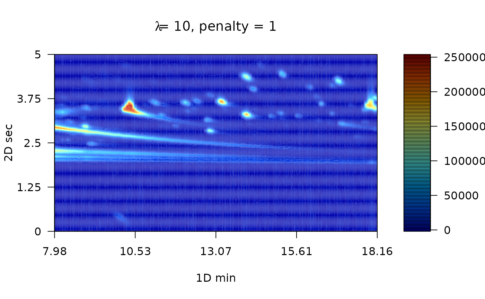

Introduction to RGCxGC package
Cristian Quiroz-Moreno
2022-12-13
Source:vignettes/Explanation.Rmd
Explanation.RmdIntroduction
This is the vignette to explain the implementation of RGCxGC package. This text presents an end-to-end pipeline for the analysis of comprehensive two dimensional gas chromatography (GCxGC-MS) data. You can access a specific function help through the command help([‘function name’]).
A general workflow about signal preprocessing in chromatography is summarized in Figure 1. Raw chromatographic signals usually contains undesirable artifacts, such as chemical and instrumental noise. Therefore, noise in the data should be removed prior statistical analysis. Furthermore, noise can be significantly reduced by using preprocessing algorithms, herein smoothing, baseline correction, and peak alignment. Then, in order to reveal differences between groups, multivariate analysis can be performed.
Figure 1. Overview of general data processing pipeline in chromatography that is presented in the RGCxGC package.
In the RGCxGC package, first, the raw chromatogram is importing from a NetCDF file and is folded into the two-dimensional Total Intensity Chromatogram (2D-TIC). Next, you can perform three preprocessing methodologies in order to enhance signals, such as smooth, baseline correction, and peak alignment. Basically, smooth enhance the signal to noise ratio (S/N), baseline correction handles column blooding, and peak alignment corrects the retention time shift of the peaks across multiple runs. Finally, you can perform a multiway principal component analysis (MPCA) to look for systematic patterns that distinguish your samples.
Basic workflow
The basic workflow of the RGCxGC package is composed of two main steps, preprocessing and multivariate analysis, after the data is imported (Figure 2).

Figure 2. The basic workflow of RGCxGC package. The functions for each step are in parenthesis. The double line between smooth andbaseline correction refers to the interchangeable pathway.
The raw NetCDF file is imported with the read_chrom function, by providing the file name and modulation time that the GCxGC data was acquired. Next, you can perform preprocessing routines like smoothing and/or baseline correction by using the function wsmooth and baseline_corr, respectively. Then, peak alignment of a single sample against a reference chromatogram can be performed based on the two-dimensional correlation optimized warping (2DCOW) algorithm. Alternatively, multiple sample alignment can be performed with batch_2DCOW function. After signal preprocessing, MPCA can be performed over the dataset by using the m_prcomp functions. As result of the MPCA, you can access to the score matrix through scores function, or plot the loading matrix with the plot_loading function. Finally, the MPCA summary can be retrieved with the print_mpca function. On the other hand, the RGCxGC package can export the two-dimensional chromatograms in order to perform supervised models. It can be done through unfold_chrom. Supervised models can be done with the mixOmics functions.
Detailed workflow
Installation
You can install the package in different manners. The most common is to install it from CRAN.
install.packages("RGCxGC")Another way is to install it is through the developer version in github.
Once you have successfully installed the package, you can acces to every functions and data provided by calling the library.
## Loading required package: RNetCDF## Loading required package: ptw##
## Attaching package: 'RGCxGC'## The following object is masked from 'package:graphics':
##
## plot## The following object is masked from 'package:base':
##
## plotImporting raw chromatogram
The example data is retrieved form Diagnostic metabolite biomarkers of chronic typhoid carriage. You can access to the whole dataset with the identifier MTBLS579 in the MetaboLights database.
You can import the raw chromatogram through the read_chrom function. This function requires at least two parameters: the name of the NetCDF file (name), and the modulation time. This is an adaptation of Skov routine Skov and Bro (2008).
chrom_08 <- system.file("extdata", "08GB.cdf", package = "RGCxGC")
MTBLS08 <- read_chrom(chrom_08, mod_time = 5)## Warning in base_GCxGC(Object = Object, mod_time = mod_time, sam_rate =
## sam_rate, : The last 51 signals will be omitted## Warning in matrix(tic, nrow = len_1d, ncol = len_2d): data length [61051] is not
## a sub-multiple or multiple of the number of rows [500]## Retention time ranges:
## 1D (min): 7.98 18.16
## 2D (sec): 0 5
## Acquisition rate: 100
slotNames(MTBLS08)## [1] "chromatogram" "time" "name" "mod_time"As we can see, the MTBLS08 object has four slots. The first one correspond to the 2D-TIC chromatogram. The second slot refers to the retention time in the first dimension. The third slot is the name of the NetCDF file, which is first check for validity before importing the chromatogram. Finally, the fourth slot is the modulation time in the second dimension.
Chromatogram visualization
To visualize chromatograms, you can use the plot function. It is built from filled.contour R base function. Since contour plots is a good choice to display non-native GCxGC data (Reichenbach et al. 2004). The default function only plots the most intense signals, into a few breaks. For a detailed tutorial on 2D chromagram visualization, please visit the tutorial web site.
Due to the large variety of metabolite concentrations in a sample, the total ion current can also have large variability in the intensity scale. Therefore, you have to set the number of levels in hundreds. As the number of levels increases, you can obtain a more detailed chromatogram. On the other hand, you can use color palettes presented in the colorRamps package (matlab.like & matlab.like2).
# nlevels: Number of levels
# color.palette: The color palette to employ
library(colorRamps)
plot(MTBLS08, nlevels = 100, color.palette = matlab.like2)
Signal preprocessing
In chromatography, the net metabolite signals are often obscured by instrumental and chemical noise. These undesirable signals disturbs the chemical interpretation of the results. In order to remove irrelevant information, some preprocessing steps can be employed. The most common preprocessing algorithms are: baseline correction, smoothing and peak alignment, which are reviewed in the following sections.
Baseline correction
Baseline correction remove a steady and increasing intensity in the signal. For example, contamination of the instrument system injection or column bleeding. The baseline correction implemented in this package employs the asymmetric least squares algorithm (Eilers 2004).
MTBLS08_bc <- baseline_corr(MTBLS08)
plot(MTBLS08_bc, nlevels = 100, color.palette = matlab.like2)
The result of this preprocessing step is a cleaner chromatogram. The baseline has been removed and all of the separation space has filled with a more intense blue.
Smoothing
The Whittaker smoother algorithm1 is used in this package (Eilers 2003). As the main advantages, it accounts with computational efficiency, control over smoothness and automatically interpolation. The Whittaker smoother for GCxGC is implemented in the first chromatogram dimension. In other words, smoothing is carry out to every chromatographic modulation.
The Whittaker smooth algorithm works with discrete penalized least squares. For instance, the penalty order (1 or 2) and the \(\lambda\) arguments has to be provided. While the penalty refers to the order to penalize the roughness of the signals, \(\lambda\) is factor which multiply the rougness signal level. For instance, greater parameter values will hava a stronger influence in the smmothing process.
# Linear penalty with lambda equal to 10
MTBLS08_sm1 <- wsmooth(MTBLS08_bc, penalty = 1, lambda = 1e1)
plot(MTBLS08_sm1, nlevels = 100, color.palette = matlab.like,
main = expression(paste(lambda, "= 10, penalty = 1")) )
# Cuadratic penalty with lambda equal to 10
MTBLS08_sm2 <- wsmooth(MTBLS08_bc, penalty = 2, lambda = 1e1)
plot(MTBLS08_sm2, nlevels = 100, color.palette = matlab.like,
main = expression(paste(lambda, "= 10, penalty = 2")) )
Peak alignment
In the chemometric pipeline, the user selects the desired and required preprocessing steps. However, peak alignment is practically mandatory whenever multiple samples should be compared. The peak alignment corrects unavoidable shifts of the retention times among chromatographic runs.
There are two general pathways for peak alignment: using peak table, or pixel level alignment. In this package, the pixel level alignment is implemented by using the two-dimensional correlation optimized warping (2D-COW) algorithm is implemented (Dabao Zhang et al. 2008). Basically, the algorithm works by splitting the raw chromatogram into \(n\) segments. Then, time warping is applied over each dimensions using the one dimensional correlation optimized warping (COW) algorithm (Tomasi, Van Den Berg, and Andersson 2004).
The TwoDCOW function need four arguments: the sample name, the reference chromatogram, the number of segments to split the chromatogram and the maximum warping level for both dimensions.
# Reference chromatogram
chrom_09 <- system.file("extdata", "09GB.cdf", package = "RGCxGC")
MTBLS09 <- read_chrom(chrom_09, mod_time = 5L)## Warning in base_GCxGC(Object = Object, mod_time = mod_time, sam_rate =
## sam_rate, : The last 51 signals will be omitted## Warning in matrix(tic, nrow = len_1d, ncol = len_2d): data length [61051] is not
## a sub-multiple or multiple of the number of rows [500]## Retention time ranges:
## 1D (min): 7.98 18.16
## 2D (sec): 0 5
## Acquisition rate: 100
# Baseline correction
MTBL09_bc <- baseline_corr(MTBLS09)
# Smoothing
MTBL09_sm2 <- wsmooth(MTBL09_bc, penalty = 2, lambda = 1e1)
# Alignment
aligned <- twod_cow(sample_chrom = MTBLS08_sm2, ref_chrom = MTBL09_sm2,
segments = c(10, 40), max_warp = c(1, 8))
plot(aligned, nlevels = 100, color.palette = matlab.like,
main = "Aligned chromatogram")Batch peak alignment
Normally, multiple samples are analyzed into batches. Therefore, to align multiple samples simultaneosuly is a more confortable option. The batch_2DCOW function performs this action.
First, you need to import the reference and sample chromatogram.
# Read Sample chromatogram
GB08_fl <- system.file("extdata", "08GB.cdf", package = "RGCxGC")
MTBLS08 <- read_chrom(GB08_fl, mod_time = 5, verbose = F)## Warning in base_GCxGC(Object = Object, mod_time = mod_time, sam_rate =
## sam_rate, : The last 51 signals will be omitted## Warning in matrix(tic, nrow = len_1d, ncol = len_2d): data length [61051] is not
## a sub-multiple or multiple of the number of rows [500]
# Read reference chromatogram
GB09_fl <- system.file("extdata", "09GB.cdf", package = "RGCxGC")
MTBLS09 <- read_chrom(GB09_fl, mod_time = 5, verbose = F)## Warning in base_GCxGC(Object = Object, mod_time = mod_time, sam_rate =
## sam_rate, : The last 51 signals will be omitted
## Warning in base_GCxGC(Object = Object, mod_time = mod_time, sam_rate =
## sam_rate, : data length [61051] is not a sub-multiple or multiple of the number
## of rows [500]The batch function needs a named list of sample chromatograms that will be aligned. Just for demonstration GB08 chromatogram will be triplicated to simulate multiple samples.
Note: List names will be considered as the names of each chromatograms and the object name will be omitted.
batch_samples <- list(Chrom1 = MTBLS08, Chrom2 = MTBLS08, Chrom3 = MTBLS08)Then, you must to introduce the same parameters explained above (segments and maximum warping).
batch_alignment <- batch_2DCOW(MTBLS09, batch_samples, c(10, 40), c(1, 10))
names(batch_alignment@Batch_2DCOW)## [1] "Chrom1" "Chrom2" "Chrom3"As you can see, the names of the sample chromatograms are the names of its object the list. In this batch example, the reference chromatogram is included as another sample chromatogram. This is useful when a representative chromatogram is selected as a reference. Therefore, it should be added after sample chromatograms are aligned. On the other hand, there is an option that allows to make an average chromatogram of multiple chromatograms. Therefore, if you batch align sample cromatograms against the new chromatogram, it should not be added as a sample chromatogram. In this cases, you should set the argument add_ref = FALSE.
Get all chromatograms together
Once the chromatograms are already preprocessed, it has to be in a single R object. To meet this requirement, the join_chromatograms functions does it. Additionally, if you have the metadata, you can also join into this R object. By default, the MPCA is carried out with mean centered and unit scaled data.
allChrom <- join_chromatograms(MTBLS09, MTBLS08)In this function, you can provide as many chromatograms or batch chromatograms as you want. What only issue you have to take into consideration is, if you provide a single chromatogram, you have to call the function with a named argument. For example, if you have a chromatogram of name chrom_control, you have to call the function trough (chrom_control = chrom_control).
For example, lets consider that we have the following objects:
- reference_1: A single reference chromatogram of group one,
- reference_2: A single reference chromatogram of group two,
- batch_samp1: A batch aligned chromatograms of the group one,
- batch_samp2: A batch aligned chromatograms of the group two and
- metadata_exp The experiment metadata.
Then, the user should proceed as follow:
join_complex <- join_chromatograms(batch_samp1, batch_samp2,#Two batch samples
Ref_chrom1 = reference_1,#User named argument
Ref_chrom2 = reference_2,#User named argument
groups = metadata_exp) #MetadataMultiway Principal Component Analysis
Multivariate analysis is chosen in the RGCxGC package in order to extract the main variables that distinguish the samples. Due to high complexity of the chromatograms containing thousands of variables, the multivariate algorithms is an interesting approach for data analysis in GCxGC.
In this case, the extension of principal component analysis is implemented, the Multiway Principal Component Analysis (MPCA) (Wold et al. 1987). It can handle the three dimensions of the dataset that is typical for 2D-TIC from GCxGC.
The example data has two groups, the S. typhy carriage, and the control group. In this sense we are going to perform MPCA with 6 chromatograms.
| Names | Type |
|---|---|
| 08GB | S. typhy Carriege |
| 09GB | S. typhy Carriege |
| 14GB | S. typhy Carriege |
| 29GB | Control |
| 34GB | Control |
| 24GB | Control |
In the previous section, the S. typhy carriage is already aligned. In order to have the same preprocessing techniques for both groups, the control chromatograms will be aligned. The chromatogram set can be called with the name of MTBLS579 name.
data(MTBLS579)Note: If you would like to work with the whole chromatograms, dowload the MTBLS.rda file from this link.
exp_MPCA <- m_prcomp(MTBLS579, center = T, scale = F)Scores
The scores is the projection in the reduced multivariate space spanned by principal components, and it is related to the (chromatographic) differences among the samples. To access to the scores matrix, you can use the scores function.
scores(exp_MPCA)## Names PC1 PC2 PC3 PC4 PC5
## 1 08GB -2508140.9 -937066.4 40646.55 -2.224940e-08 -2.943485e-09
## 2 09GB -2508140.9 -937066.4 40646.55 -2.224940e-08 -2.943485e-09
## 3 14GB -1784822.7 1558957.2 -749416.56 -1.439727e-08 -1.505606e-09
## 4 24GB 277512.5 987227.1 1110137.04 3.789541e-09 -5.898144e-10
## 5 29GB 3261796.0 -336025.7 -221006.79 2.698099e-08 3.918622e-09
## 6 34GB 3261796.0 -336025.7 -221006.79 2.698099e-08 3.918622e-09
## PC6 Type
## 1 -6.283813e-09 S. typhy Carriege
## 2 -6.283813e-09 S. typhy Carriege
## 3 -3.743423e-09 S. typhy Carriege
## 4 3.026344e-10 Control
## 5 9.563252e-09 Control
## 6 9.563252e-09 ControlLoadings
While the scores matrix represents the relationship between samples, the loading matrix explain the relationship between variables. To plot loadings, you can use the plot_loading function. The type argument refers to positive (type = “p”) or negative (type = “n”) loading values or (type = “b”) for both loadings values. The default option of this function is to plot the first principal component, even though, you can choose setting the pc argument.
# Negative loadings
plot_loading(exp_MPCA, type = "n", main = "Negative loadings",
color.palette = matlab.like)
# Positive loadings
plot_loading(exp_MPCA, type = "p", main = "Positive loadings",
color.palette = matlab.like)